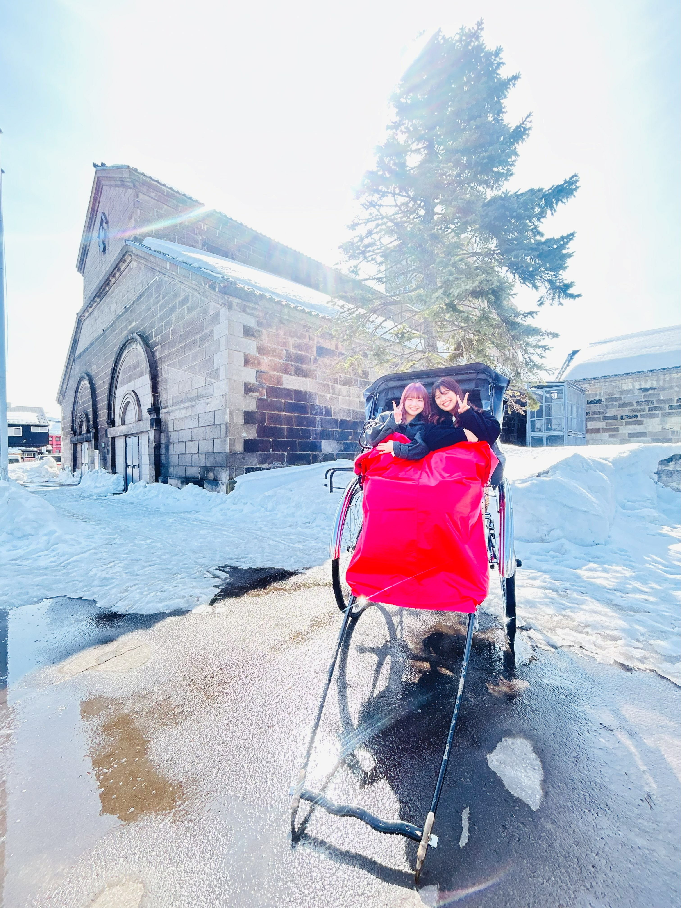
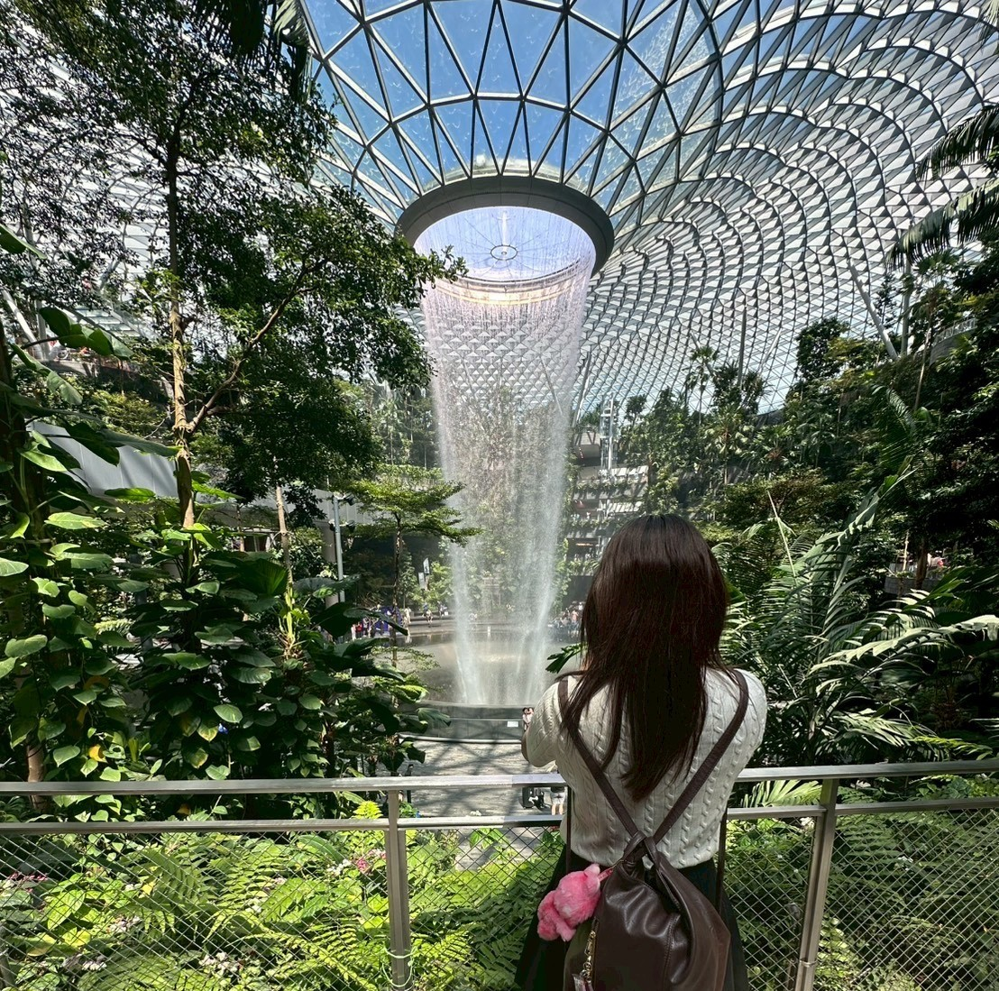
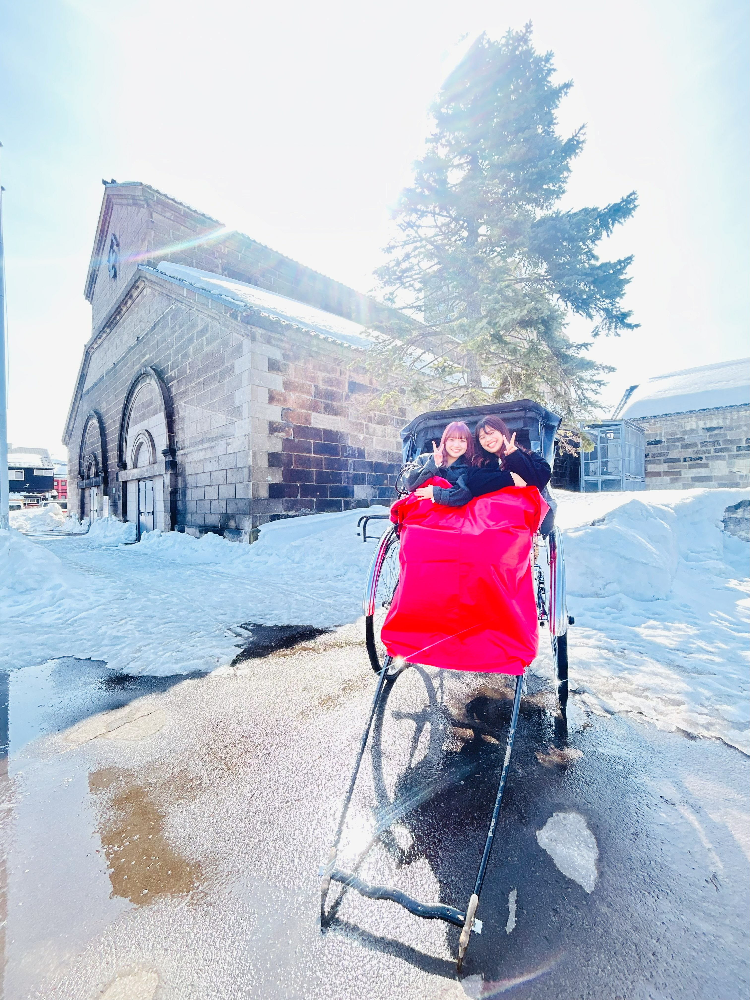
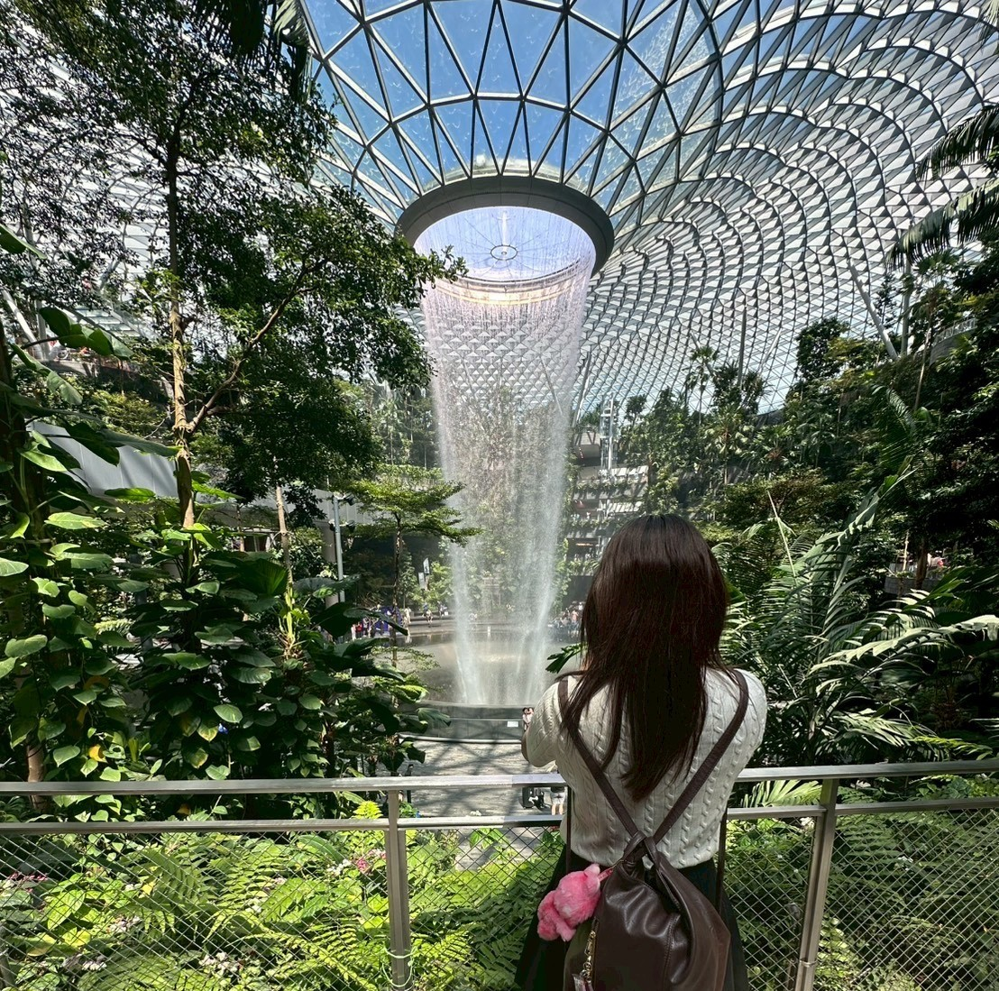

Hobbies
 



旅行 (Travel)
国内外問わず、新しい場所を訪れてその土地の文化や歴史に触れるのが好きです。特にアジアの国々を旅することが多く、現地の食事を楽しんだり、美しい景色を写真に収めたりしています。計画を立てる段階から旅の楽しみは始まっており、次の目的地を考えるのが日々の原動力です。
スポーツ観戦 (Watching Sports)
特にサッカー観戦が好きで、週末は国内外のリーグ戦をチェックしています。スタジアムの熱気を感じながら応援するのも、戦術を分析しながらじっくり観るのも、どちらも同じくらいエキサイティングです。応援しているチームが勝利した時の喜びは格別です。